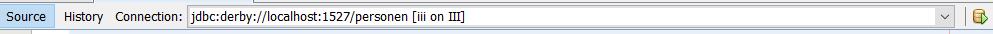
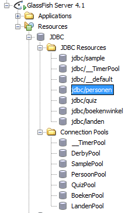

In dit labo schrijven we de datalaag voor een webapplicatie PersonenWeb.
De interface voor de datalaag ligt vast in de interface be.iii.personen.PersoonDAO.
Er is reeds een dummy-implementatie voorzien in de klasse be.iii.personen.data.PersoonDAODummy.
Het doel van deze opdracht is om de dummy-implementatie te vervangen door een implementatie die de data bewaart
in een gegevensbank. Hierbij maken we gebruik van een DataSource ipv een JDBC-driver en van
CachedRowSets.
Open de webapplicatie PersonenWeb in Netbeans en test ze uit. Deze applicatie heeft de volgende functionaliteit:
VoegToe wordt
een persoon toegevoegd, maar nog niet bewaard in de databank. Pas bij het klikken
op de "Bewaar alles"-knop worden de toegevoegde personen zichtbaar in het eerste deel
van de webpagina en worden ze bewaard in de databank.
Om de datasource op te zetten en te configureren moet je de volgende stappen uitvoeren:
PERSONEN aan.
DataSource aan in Glassfish.
In oudere versies van Glassfish (4.1 en ouder) kon dit in een webapplicatie, nu (Glassfish 4.1.1 en later)
moeten de pool en de datasource toegevoegd worden via de console (commandolijnopdrachten).
Ga naar de bin-map van Glassfish (bv. C:\Program Files\glassfish-4.1\bin) en voer de volgende twee opdrachten uit:asadmin create-jdbc-connection-pool --datasourceclassname org.apache.derby.jdbc.ClientDataSource --restype javax.sql.DataSource
--property portNumber=1527:password=iiipwd:user=iii:serverName=localhost:databaseName=personen PersoonPoolasadmin create-jdbc-resource --connectionpoolid PersoonPool
jdbc/personen
In Netbeans kan je nu de aangemaakte pool en datasource bekijken.
Implementeer de datalaag met behulp van de aangemaakte datasource en
met CachedRowSets. Je zal twee CachedRowSets nodig hebben: één
om personen toe te voegen en één om personen aan te passen.
Bij het toevoegen van personen mag je de ID-kolom niet mee
opvragen omdat de waarde voor deze kolom automatisch aangemaakt wordt.
Om de nieuwe implemenatie van PersoonDAO te gebruiken vervang je in het configuratiebestand faces-config.xml op lijn 8 be.iii.personen.data.PersoonDAODummy door de naam van de nieuwe klasse.